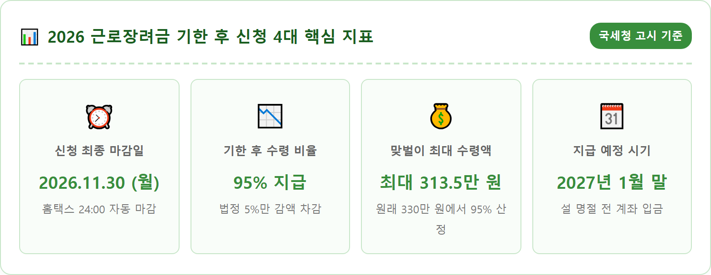
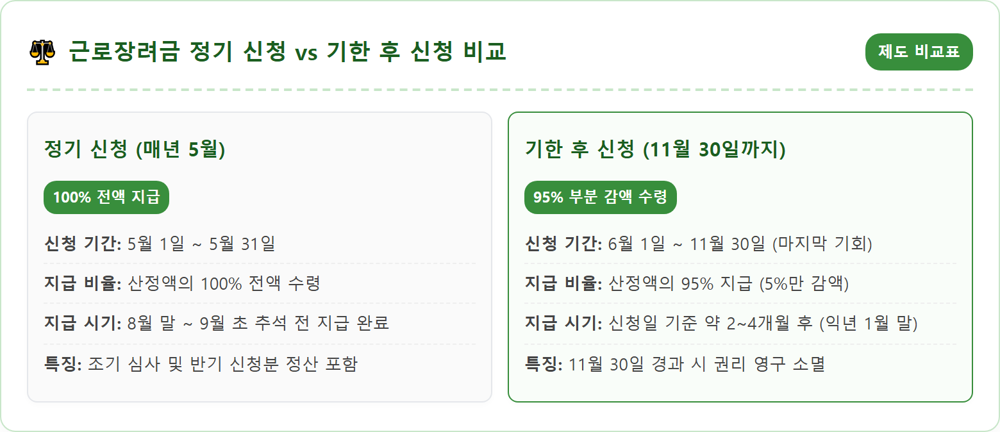
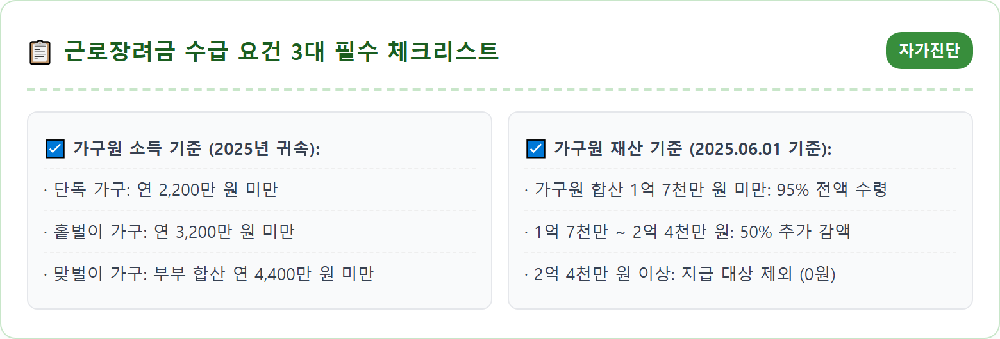
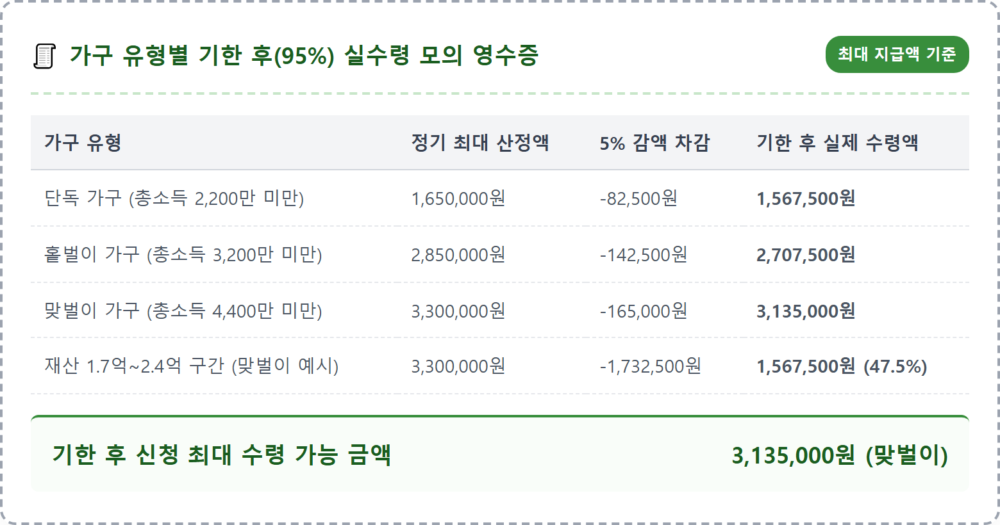
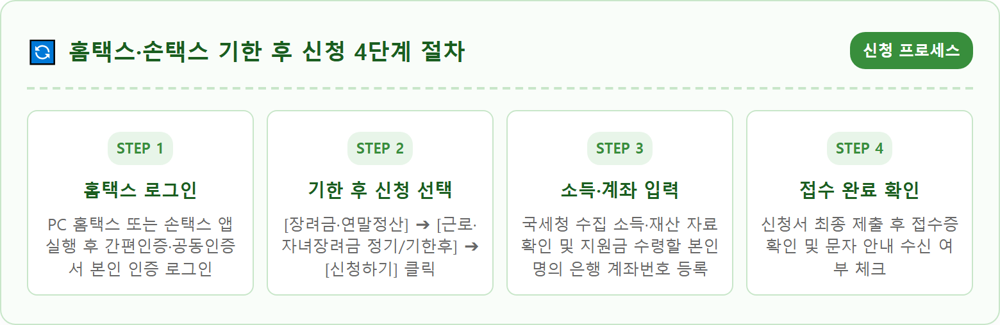
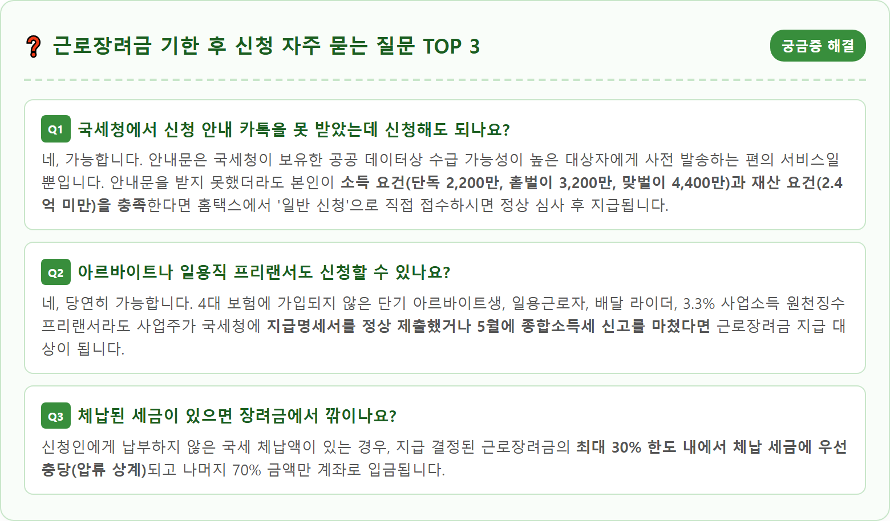

A photorealistic, highly detailed conceptual still life representing South Korean tax support and government subsidy. A neat office desk setting with an open tablet displaying a clean financial application portal screen with green accents. Next to the tablet, a South Korean calendar clearly highlighting the date November 30 with a red circle. A modern smartphone, a stylish calculator, neat stacks of Korean Won banknotes, and official tax application paperwork. Warm, soft indoor lighting, professional overhead composition, clean aesthetic, ultra-sharp focus, 8k resolution, 1:1 aspect ratio.

근로장려금은 열심히 일하지만 소득이 적어 생활이 팍팍한 저소득 근로자, 사업자(전문직 제외), 종교인 가구를 지원하기 위해 국가가 지급하는 실질적 소득 지원 제도입니다. 매년 5월 1일부터 5월 31일까지 진행되는 정기 신청 기간을 깜빡 잊고 놓친 분들을 위해 국세청은 조세특례제한법에 따라 '기한 후 신청' 제도를 두고 있습니다.
기한 후 신청 기간은 정기 신청 마감 다음 날인 6월 1일부터 **11월 30일까지 정확히 6개월 동안** 운영됩니다. 2026년 11월 30일 밤 12시(24:00)가 지나면 해당 귀속 연도(2025년 소득분)에 대한 근로장려금은 법적으로 영구히 소멸하여 다시는 청구하거나 소급받을 수 없습니다.
"기한이 지났으니 안 주겠지"라며 포기하시는 분들이 많지만, 기한 후 신청을 하더라도 원래 받을 수 있는 산정 금액의 **95%라는 큰 금액**을 그대로 지급받을 수 있습니다. 단 5%의 페널티만 차감될 뿐 수십만 원에서 수백만 원에 달하는 현금을 합법적으로 돌려받을 수 있는 마지막 골든타임이므로 반드시 11월 30일 이전에 신청을 완료하셔야 합니다.
근로장려금의 기한 후 신청 감액률은 과거 10%였으나 세법 개정을 통해 5%로 대폭 완화되었습니다. 즉, 정기 신청 기간에 접수했을 때 산정되는 법정 장려금 총액에서 정확히 5%만을 제하고 나머지 95%를 지급합니다.
가구 유형별 최대 지급액을 기준으로 실제 수령액을 계산해보면 그 차이를 명확히 알 수 있습니다. 단독가구의 경우 정기 신청 시 최대 165만 원을 받지만, 기한 후 신청 시에는 5%인 8만 2,500원이 공제된 **156만 7,500원**을 받게 됩니다. 홑벌이 가구는 원래 최대 285만 원에서 14만 2,500원이 감액된 **270만 7,500원**을 수령합니다.
소득 요건이 완화된 맞벌이 가구의 경우 원래 최대 330만 원 중 16만 5,000원이 공제된 **313만 5,000원**이라는 적지 않은 목돈을 그대로 손에 쥘 수 있습니다. 신청하지 않으면 0원이지만, 스마트폰으로 단 3분만 투자하면 150만~300만 원 이상의 가계 보탬이 생기므로 결코 지나쳐서는 안 될 소중한 권리입니다.

근로장려금을 수령하기 위해서는 2025년도 소득과 재산이라는 두 가지 핵심 관문을 모두 통과해야 합니다. 먼저 가구 유형은 단독가구, 홑벌이 가구, 맞벌이 가구로 엄격하게 구분됩니다.
단독가구는 배우자, 부양자녀, 70세 이상 직계존속이 모두 없는 1인 가구로, 연간 총소득이 **2,200만 원 미만**이어야 합니다. 홑벌이 가구는 배우자의 총급여액이 300만 원 미만이거나 부양자녀 또는 70세 이상 부모가 있는 가구로 총소득 **3,200만 원 미만**이 기준입니다. 부부 모두 소득이 있는 맞벌이 가구는 총소득 요건이 대폭 완화되어 부부 합산 **4,400만 원 미만**까지 신청 자격이 주어집니다.
두 번째 조건인 재산 요건은 2025년 6월 1일 기준으로 가구원 모두가 소유하고 있는 재산 합계액이 **2억 4,000만 원 미만**이어야 합니다. 주택, 토지, 건축물, 승용차(시가표준액 기준), 전세보증금, 금융자산(예금, 적금, 주식), 분양권 등이 모두 합산되며, 부채(대출금)는 재산 가액에서 차감되지 않는다는 점을 유의하셔야 합니다.

근로장려금을 신청할 때 많은 분이 혼동하는 치명적인 복병이 바로 '재산 구간별 추가 감액 규정'입니다. 가구원 전체의 재산 합계액이 2억 4,000만 원 미만이라 하더라도, **1억 7,000만 원 이상 2억 4,000만 원 미만 구간**에 걸치게 되면 산정액에서 추가로 50%가 깎여 지급됩니다.
기한 후 신청의 경우 이 두 가지 감액이 중복 적용됩니다. 즉, 원래 정기 신청 기준 산정액에서 기한 후 감액 5%가 먼저 적용되고, 남은 95% 금액에서 다시 재산 초과에 따른 50% 감액이 적용되어 최종적으로는 원래 금액의 47.5%만을 수령하게 됩니다.
여기서 특히 주의할 점은 전세 거주자의 전세보증금 평가 방식입니다. 실제 임대차계약서상의 보증금과 해당 주택 기준시가의 55%(간주전세금) 중 더 적은 금액이 재산으로 평가됩니다. 본인의 재산이 1억 7천만 원 언저리에 걸쳐 있다면 홈택스 모의계산기를 통해 감액 여부를 사전에 가늠해보시는 것이 좋습니다.

기한 후 신청은 세무서를 직접 방문할 필요 없이 스마트폰 모바일 앱(손택스)이나 국세청 홈택스 홈페이지를 통해 24시간 비대면으로 간편하게 완료할 수 있습니다.
국세청으로부터 카카오톡이나 문자메시지로 신청 안내문(개별인증번호 8자리)을 받으신 분은 절차가 더욱 간단합니다. 안내문의 링크를 클릭하거나 ARS 전화(1544-9944)로 전화를 걸어 주민등록번호와 개별인증번호만 입력하면 본인 명의 계좌번호 확인 후 1분 만에 접수가 완료됩니다.
안내문을 받지 못한 분이라도 본인이 소득과 재산 요건을 충족한다고 판단되면 홈택스에 로그인하여 '일반 신청'을 진행할 수 있습니다. 간편인증(카카오, 네이버, 패스 등)으로 로그인 후 [장려금·연말정산] 메뉴에서 [근로장려금 기한 후 신청]을 클릭하고, 세대원 명세와 계좌번호를 입력한 뒤 제출하시면 됩니다.

11월 30일까지 기한 후 신청서를 제출하고 나면 가장 궁금한 것이 "과연 언제 통장에 돈이 들어오는가"입니다. 정기 신청분은 매년 8월 말에 일괄 지급되지만, 기한 후 신청분은 신청 접수일로부터 약 2~4개월간의 세무서 정밀 검증 과정을 거칩니다.
국세청의 행정 처리 지침상 11월 30일까지 최종 접수된 기한 후 신청분은 관할 세무서 소득재산세과의 심사를 거쳐 **2027년 1월 말(설 연휴 직전)**에 신청인이 등록한 환급 계좌로 일괄 지급됩니다. 6월이나 7월에 일찍 신청하셨던 분들은 10월 말이나 11월 중에 순차적으로 조기 지급되기도 합니다.
심사 진행 상황은 홈택스나 손택스에 로그인한 후 [장려금·연말정산] ➔ [근로·자녀장려금] ➔ [심사진행상황조회] 메뉴에서 실시간으로 확인할 수 있습니다. '신청 접수' ➔ '자료 수집 중' ➔ '심사 중' ➔ '지급 결정' 단계로 상태가 바뀌며, 지급이 결정되면 최종 결정 금액과 입금 예정일이 투명하게 안내됩니다.

열심히 신청서를 제출했음에도 심사 과정에서 '지급 제외(탈락)' 판정을 받아 실망하는 사례가 매년 수만 건에 달합니다. 가장 흔한 탈락 사유를 미리 점검하여 불이익을 방지해야 합니다.
첫 번째 사유는 '허위 근로소득'입니다. 실제로 일하지 않고 지인의 사업장에 이름을 올려 근로소득을 가공 계상한 경우 국세청 현장 실사 및 금융 추적을 통해 전액 환수되며, 향후 2~5년간 장려금 지급이 제한되는 강력한 제재를 받습니다.
두 번째는 '세대 분리 오류'입니다. 주민등록상 부모님과 같은 주소지에 거주하고 있으면서 본인 혼자 단독가구로 신청하는 경우입니다. 국세청은 주민등록표상 동일 세대원의 재산을 모두 합산하여 판정하므로, 부모님의 주택이나 예금이 합산되어 2억 4천만 원을 초과하면 자녀는 자동으로 탈락 처리됩니다. 실제로 독립 생계를 유지한다면 전입신고를 통한 완벽한 세대 분리가 선행되어 있어야 합니다.
18세 미만(2007년 1월 2일 이후 출생)의 부양자녀를 둔 가구라면 근로장려금과 함께 '자녀장려금'도 반드시 함께 챙기셔야 합니다. 자녀장려금은 부부 합산 총소득 기준이 연간 **7,000만 원 미만**으로 대폭 상향되었으며, 부양자녀 1인당 최대 100만 원(기한 후 신청 시 95만 원)이 지급됩니다.
자녀장려금 역시 11월 30일까지 기한 후 신청이 가능하며, 홈택스에서 근로장려금을 신청할 때 자녀 정보를 함께 입력하면 시스템에서 자동으로 두 장려금을 동시 신청 처리해 줍니다.
예를 들어 자녀가 2명인 홑벌이 가구라면 근로장려금 기한 후 실수령액 270만 원에 자녀장려금 190만 원(95만 원 × 2명)이 더해져 **총 460만 원**에 달하는 막대한 정부 지원금을 한 번에 수령할 수 있습니다. 18세 미만 자녀가 있다면 자녀장려금 누락 여부를 반드시 재확인하시기 바랍니다.
기한 후 신청 과정에서 소득 자료가 홈택스에 누락되어 있거나 본인의 재산 산정에 이의가 있는 경우, 증빙서류(임대차계약서 사본, 급여통장 입금내역서 등)를 온라인으로 첨부 제출할 수 있습니다.
스마트폰 손택스나 PC 홈택스의 [증빙서류제출] 메뉴를 통해 스마트폰 카메라로 촬영한 사진 파일을 업로드하면 담당 조사관에게 즉시 전달됩니다.
온라인 신청이 서툴거나 본인의 수급 자격 여부가 헷갈리는 어르신들은 국세청 장려금 전용 상담센터(☎ 1566-3636)나 국세상담센터(☎ 126)로 전화하시면 전문 상담원의 1:1 유선 안내를 받으실 수 있습니다. 마감일인 11월 30일 당일에는 전화량이 폭주하여 연결이 어려울 수 있으므로, 며칠 여유를 두고 미리 신청을 완료하시는 지혜가 필요합니다.
| 구분 | 세부 내용 | 유의사항 및 팁 |
|---|---|---|
| 신청 마감일 | 2026년 11월 30일 (월) 24:00까지 | 기한 경과 시 2025년 귀속분 청구권 영구 소멸 |
| 신청 경로 | 국세청 홈택스(PC), 모바일 손택스 앱, ARS 1544-9944 | 공동·금융인증서 또는 카카오·네이버 간편인증 |
| 지급액 기준 | 법정 산정액의 95% (기한 후 5% 차감) | 재산 1.7억~2.4억 구간 시 추가 50% 차감 |
| 지급 예정 시기 | 2027년 1월 말 (설 연휴 전 입금) | 신청서에 기재한 본인 명의 계좌로 입금 |
| 문의 창구 | 장려금 상담센터 ☎ 1566-3636 / 국세청 ☎ 126 | 관할 세무서 소득재산세과 문의 가능 |